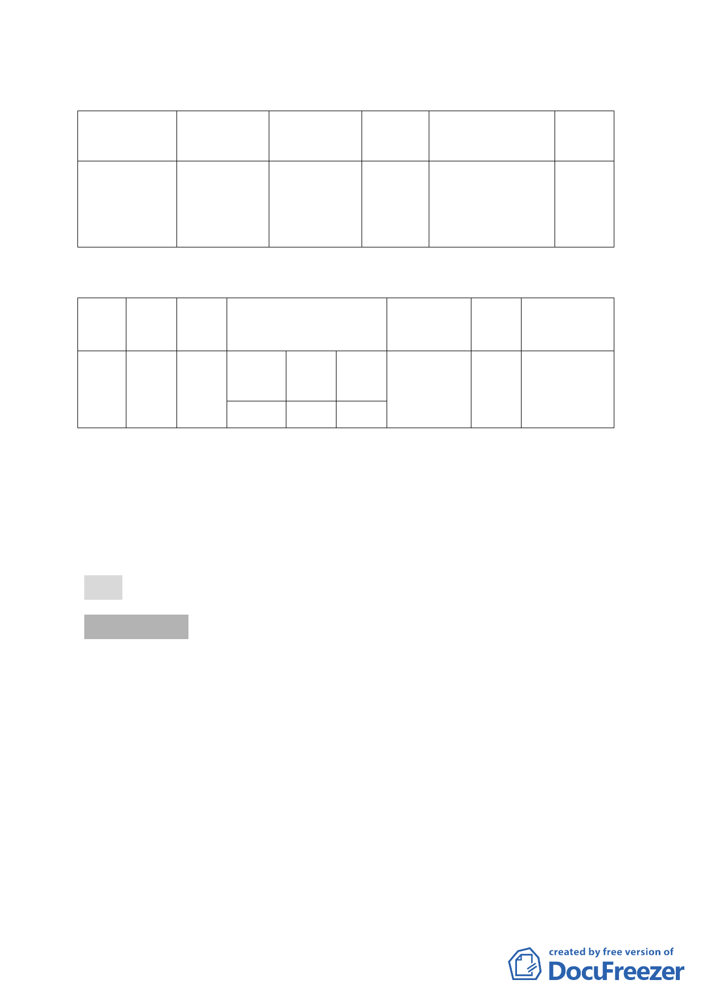

四、 修訂計畫內容：
（一） 變更內容：
位置
原計畫
新計畫
投區關渡段
三小
545-1
段
及
公園用地
549-1 地號
道路用地
面積
(平方
公尺)
203
變更理由
改善大度路口
行車安全，拓寬
臺 2 乙線道路寬
度(約 2 公尺)
備註
（二） 土地取得方式暨開闢經費表
公共
設施
種類
面積
（M2）
土地
取得
方式
道路
用地
203
撥用
開闢經費（萬元）
工程
費
80
土地
取得
合計
0 80
主辦單位
市府交通
局委託交
通部公路
總局辦理
預定
完工
期程
民國
100
年
經費來源
交通局編
列預算辦
理
五、 辦理單位：臺北市政府
六、 法令依據：都市計畫法第 27 條第 1 項第 4 款。
七、 本案係市府 99 年 8 月 19 日府都規字第 09934698403 號函送
到會，99 年 8 月 20 日公開展覽 40 天。
八、 公民或團體所提意見：無。
決議：照案通過。
討論事項 二
案名：修訂「擬（修）訂萬華車站附近地區細部計畫案」內土地
使用分區管制細部計畫案
案情概要說明：
一、為推動萬華車站附近地區之再發展，市府 86 年 9 月 3 日公
告實施「擬（修）訂萬華車站附近地區細部計畫案」，該案訂
定土地及建物允許使用組別規定、容積獎勵規定（包括更新
獎勵措施、開發時程獎勵、特定街廓設置使用組別之獎勵），
惟同時訂定放寬後總容積率之上限，並規定該上限之計算需
包含得免予計入容積率之樓地板面積。
該計畫案自 86 年公告實施迄今已十餘年，然申請辦理都
-4-